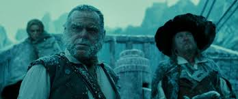
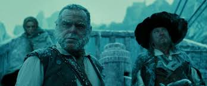

Enter DUKE SOLINUS, AEGEON, Gaoler, Officers, and other Attendants
Proceed, Solinus, to procure my fall
And by the doom of death end woes and all.
Merchant of Syracuse, plead no more;
I am not partial to infringe our laws:
The enmity and discord which of late
Sprung from the rancorous outrage of your duke
To merchants, our well-dealing countrymen,
Who wanting guilders to redeem their lives
Have seal'd his rigorous statutes with their bloods,
Excludes all pity from our threatening looks.
For, since the mortal and intestine jars
'Twixt thy seditious countrymen and us,
It hath in solemn synods been decreed
Both by the Syracusians and ourselves,
To admit no traffic to our adverse towns Nay, more,
If any born at Ephesus be seen
At any Syracusian marts and fairs;
Again: if any Syracusian born
Come to the bay of Ephesus, he dies,
His goods confiscate to the duke's dispose,
Unless a thousand marks be levied,
To quit the penalty and to ransom him.
Thy substance, valued at the highest rate,
Cannot amount unto a hundred marks;
Therefore by law thou art condemned to die.
Yet this my comfort: when your words are done,
My woes end likewise with the evening sun.
Well, Syracusian, say in brief the cause
Why thou departed'st from thy native home
And for what cause thou camest to Ephesus.
A heavier task could not have been imposed
Than I to speak my griefs unspeakable:
Yet, that the world may witness that my end
Was wrought by nature, not by vile offence,
I'll utter what my sorrows give me leave.
In Syracusa was I born, and wed
Unto a woman, happy but for me,
And by me, had not our hap been bad.
With her I lived in joy; our wealth increased
By prosperous voyages I often made
To Epidamnum; till my factor's death
And the great care of goods at random left
Drew me from kind embracements of my spouse:
From whom my absence was not six months old
Before herself, almost at fainting under
Before herself, almost at fainting under
The pleasing punishment that women bear,
Had made provision for her following me
And soon and safe arrived where I was.
There had she not been long, but she became
A joyful mother of two goodly sons;
And, which was strange, the one so like the other,
As could not be distinguish'd but by names.
That very hour, and in the self-same inn,
A meaner woman was delivered
Of such a burden, male twins, both alike:
Those,--for their parents were exceeding poor,--
I bought and brought up to attend my sons.
My wife, not meanly proud of two such boys,
Made daily motions for our home return:
Unwilling I agreed. Alas! too soon,
We came aboard.
A league from Epidamnum had we sail'd,
Before the always wind-obeying deep
Gave any tragic instance of our harm:
But longer did we not retain much hope;
For what obscured light the heavens did grant
Did but convey unto our fearful minds
A doubtful warrant of immediate death;
Which though myself would gladly have embraced,
Yet the incessant weepings of my wife,
Weeping before for what she saw must come,
And piteous plainings of the pretty babes,
That mourn'd for fashion, ignorant what to fear,
Forced me to seek delays for them and me.
And this it was, for other means was none:
The sailors sought for safety by our boat,
And left the ship, then sinking-ripe, to us:
My wife, more careful for the latter-born,
Had fasten'd him unto a small spare mast,
Such as seafaring men provide for storms;
To him one of the other twins was bound,
Whilst I had been like heedful of the other:
The children thus disposed, my wife and I,
Fixing our eyes on whom our care was fix'd,
Fasten'd ourselves at either end the mast;
And floating straight, obedient to the stream,
Was carried towards Corinth, as we thought.
At length the sun, gazing upon the earth,
Dispersed those vapours that offended us;
And by the benefit of his wished light,
The seas wax'd calm, and we discovered
Two ships from far making amain to us,
Of Corinth that, of Epidaurus this:
But ere they came,--O, let me say no more!
Gather the sequel by that went before.
Nay, forward, old man; do not break off so;
For we may pity, though not pardon thee.
O, had the gods done so, I had not now
Worthily term'd them merciless to us!
For, ere the ships could meet by twice five leagues,
We were encounterd by a mighty rock;
Which being violently borne upon,
Our helpful ship was splitted in the midst;
So that, in this unjust divorce of us,
Fortune had left to both of us alike
What to delight in, what to sorrow for.
Her part, poor soul! seeming as burdened
With lesser weight but not with lesser woe,
Was carried with more speed before the wind;
And in our sight they three were taken up
By fishermen of Corinth, as we thought.
At length, another ship had seized on us;
And, knowing whom it was their hap to save,
Gave healthful welcome to their shipwreck'd guests;
And would have reft the fishers of their prey,
Had not their bark been very slow of sail;
And therefore homeward did they bend their course.
Thus have you heard me sever'd from my bliss;
That by misfortunes was my life prolong'd,
To tell sad stories of my own mishaps.
And for the sake of them thou sorrowest for,
Do me the favour to dilate at full
What hath befall'n of them and thee till now.
My youngest boy, and yet my eldest care,
At eighteen years became inquisitive
After his brother: and importuned me
That his attendant--so his case was like,
Reft of his brother, but retain'd his name--
Might bear him company in the quest of him:
Whom whilst I labour'd of a love to see,
I hazarded the loss of whom I loved.
Five summers have I spent in furthest Greece,
Roaming clean through the bounds of Asia,
And, coasting homeward, came to Ephesus;
Hopeless to find, yet loath to leave unsought
Or that or any place that harbours men.
But here must end the story of my life;
And happy were I in my timely death,
Could all my travels warrant me they live.
| Character | Actor | Offer |
|---|---|---|
| SOLINUS | Jhon | 1.5M$ |
| DUKE SOLINUS | Mike | 1.5M$ |
| AEGEON | Maddy | 1M$ |
| Gaoler | Harld | 1M$ |
 
